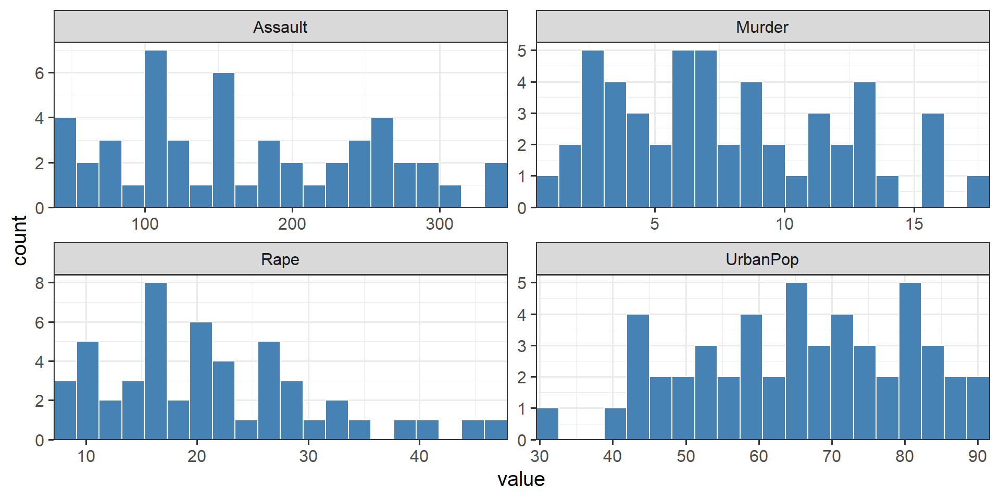
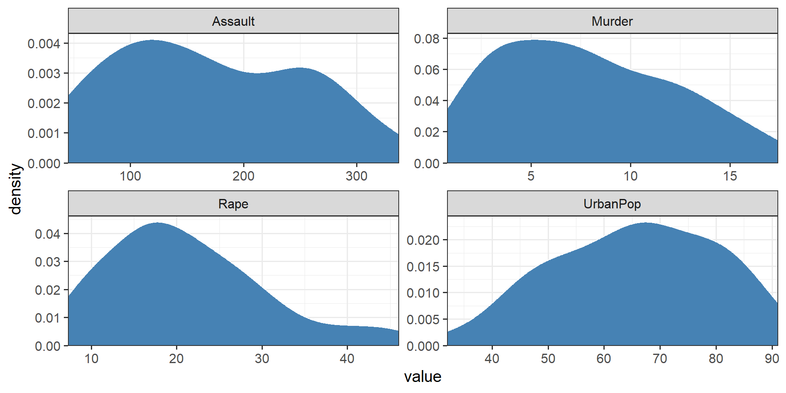
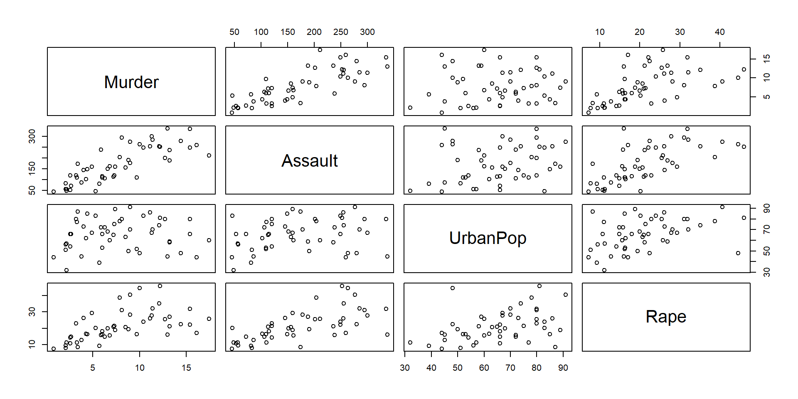
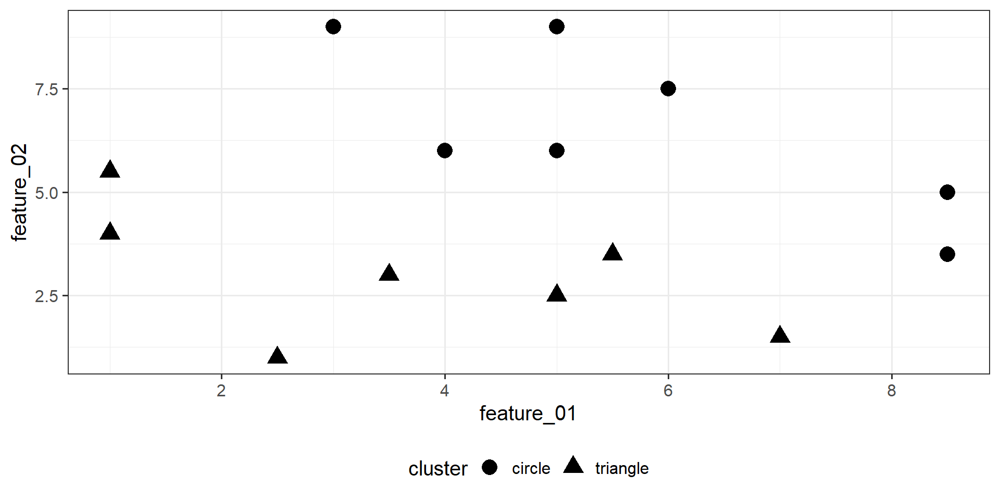
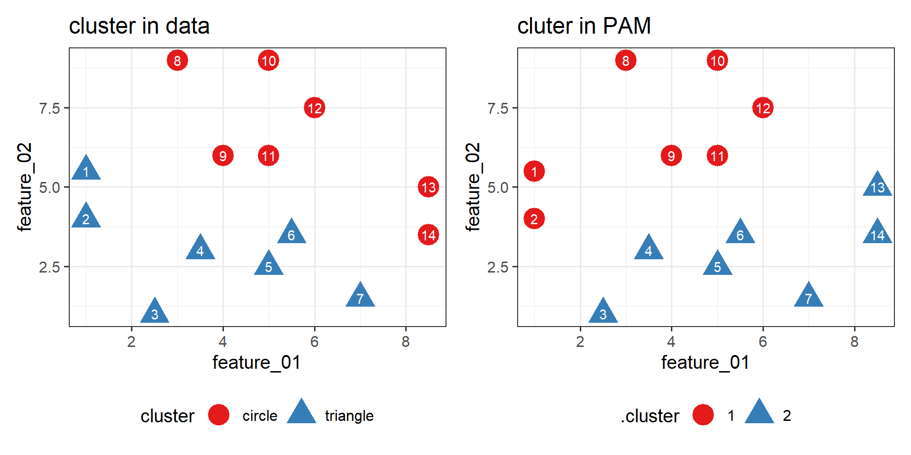
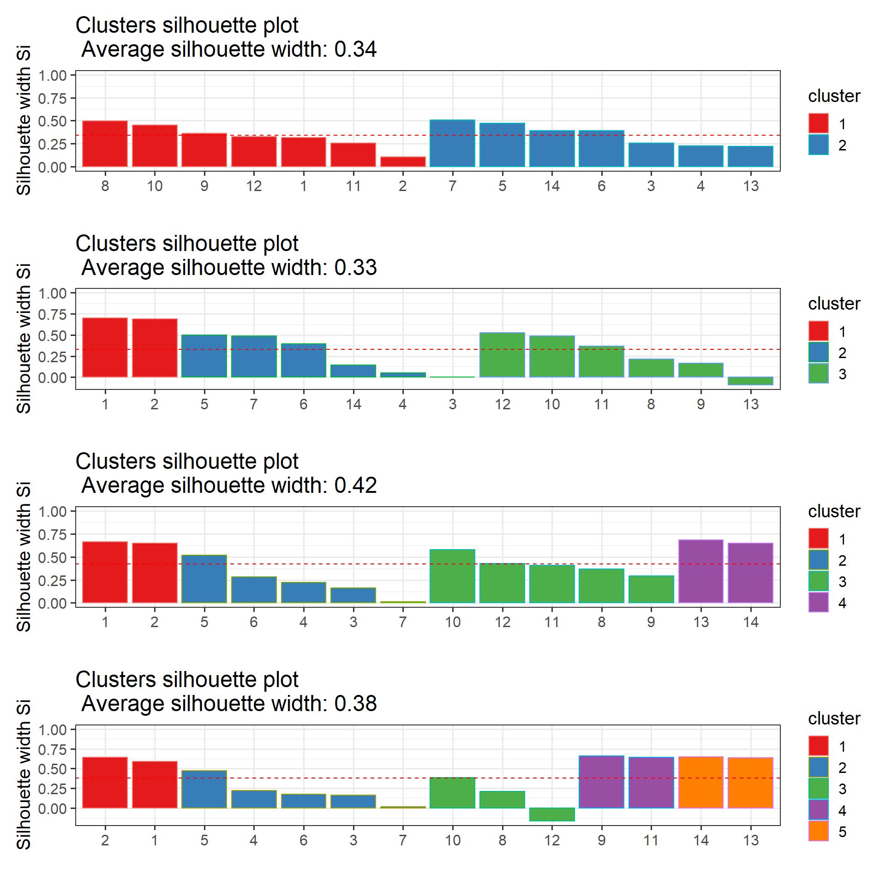
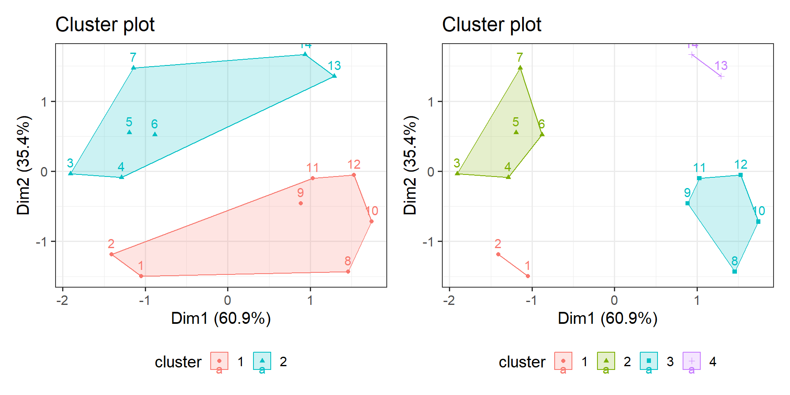
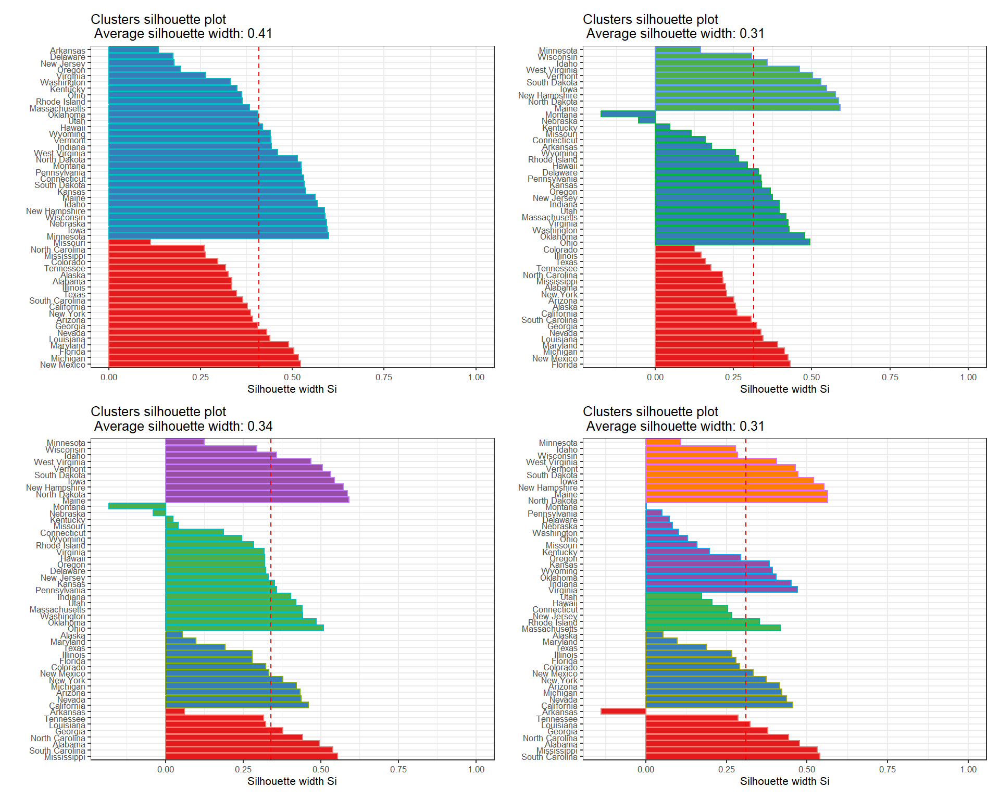
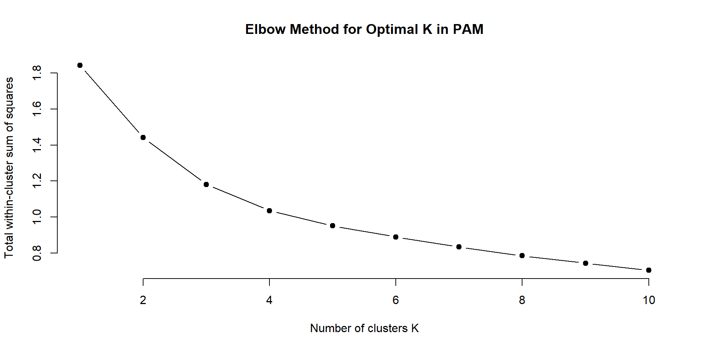
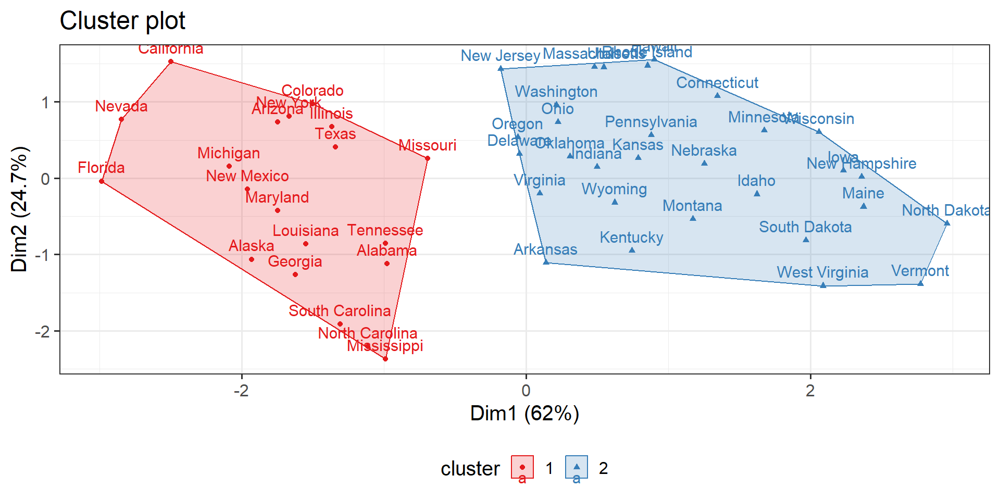

(P)artitioning (A)round (M)edoids
Robustness to Noise and Outliers
PAM: Uses medoids (actual data points) as cluster centers, which makes it more robust to noise and outliers. The medoid is less influenced by outliers compared to the centroid used in K-means.
K-means: Uses centroids (mean of the points in a cluster) as cluster centers, which can be significantly influenced by outliers and noise.
Interpretability
PAM: Since medoids are actual data points from the dataset, the cluster centers are more interpretable and meaningful in real-world scenarios.
K-means: Centroids are not actual data points but rather the mean of the cluster members, which might be less intuitive to interpret.
Suitable for Arbitrary Distance Metrics
PAM: Can use any distance metric, making it more flexible for different types of data (e.g., categorical, ordinal, or non-Euclidean).
K-means: Typically uses Euclidean distance, which may not be suitable for all types of data or similarity measures.
Cluster Shape
PAM: Can handle clusters of various shapes and sizes better than K-means because it doesn’t assume spherical clusters centered around a mean.
K-means: Assumes clusters are spherical and equally sized, which might not always be the case.
Convergence to a Global Optimum
PAM: Uses a more exhaustive search (swap between medoids and non-medoids) to find the optimal set of medoids, which can lead to better overall clustering results.
K-means: Relies on iterative refinement, which can get stuck in local optima and is sensitive to the initial placement of centroids.
Disadvantages to k-means
Scalability:
- PAM: Computationally more expensive and less scalable to large datasets.
- K-means: Computationally efficient and more suitable for large datasets.
Implementation Complexity:
PAM: More complex to implement and requires more computation time.
K-means: Simpler and faster to implement.
the idea
doing it
data("USArrests")- \(50\) observations
- \(4\) variables:
Murder: number of murder arrests per \(100,000\)Assault: number of assault arrests per \(100,000\)UrbanPop: percent urban populationRape: number of rape arrests per \(100,000\)
histograms
density
multivariate
optimal number of clusters

average silhouette method
compute the average distance (\(a(i)\)) of each point within its cluster (within cluster distance)
compute the distance of each point to all points in the nearest cluster (next closest cluster)
Silhouette Score:
\[\begin{align} s(i) = \frac{b(i)-a(i)}{max(a(i),(b(i)))} \end{align}\]
average silhouette method: example on toy data
modeling (k = 2)
silhouette plot (n = 2)
cluster size ave.sil.width
1 1 7 0.33
2 2 7 0.35silhouette plot (n = 2,3,4,5)
cluster plot on toy data
back to business

for k = 2,3,4,5

elbow plot
cluster plot
cluster output
Medoids:
ID Murder Assault UrbanPop Rape
New Mexico 31 0.8292944 1.3708088 0.3081225 1.1603196
Nebraska 27 -0.8008247 -0.8250772 -0.2445636 -0.5052109
Clustering vector:
Alabama Alaska Arizona Arkansas California
1 1 1 2 1
Colorado Connecticut Delaware Florida Georgia
1 2 2 1 1
Hawaii Idaho Illinois Indiana Iowa
2 2 1 2 2
Kansas Kentucky Louisiana Maine Maryland
2 2 1 2 1
Massachusetts Michigan Minnesota Mississippi Missouri
2 1 2 1 1
Montana Nebraska Nevada New Hampshire New Jersey
2 2 1 2 2
New Mexico New York North Carolina North Dakota Ohio
1 1 1 2 2
Oklahoma Oregon Pennsylvania Rhode Island South Carolina
2 2 2 2 1
South Dakota Tennessee Texas Utah Vermont
2 1 1 2 2
Virginia Washington West Virginia Wisconsin Wyoming
2 2 2 2 2
Objective function:
build swap
1.441358 1.368969
Available components:
[1] "medoids" "id.med" "clustering" "objective" "isolation"
[6] "clusinfo" "silinfo" "diss" "call" "data" References
Copyright Prof. Dr. Tim Weber, 2024